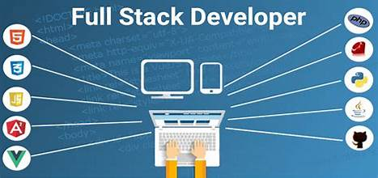

Full-Stack Developer:
A full-stack developer helps build and maintain both the front-end and the back-end of a website. Learn about full-stack developer skills, salary, and how you can become one.
A full-stack developer is a developer or engineer who can build both the front end and the back end of a website. The front end and the back end require different skill sets. Since full-stack developers are involved with all aspects of the development process, they must have expertise in both.

What does a full-stack developer do?
Full-stack developers design and create websites and applications for various platforms. A full-stack developer’s job description might include the following:
- Develop and maintain web services and interfaces.
- Contribute to front-end and back-end development processes.
- Build new product features or APIs.
- Perform tests, troubleshoot software, and fix bugs.
- Collaborate with other departments on projects and sprints
programming languages and tools:
- Angular JS
- CSS
- JavaScript
- jQuery
- Microsoft SQL Server
- MySQL
- Node.js
- PHP
- React
- Ruby on Rails
- Vue.js
Full-stack Developer skills:
Full-stack developers may be creative, graphically inclined, internet- and tech-savvy, and have excellent attention to detail. You’ll want to learn the following skills to have a career in full-stack development:.
- Front-end development is the process of creating the interface of a website. It entails coding details like drop-down menus, fonts, colors, and page layouts. Full-stack developers should also know how to work with front-end technologies like HTML, CSS, and scripting languages such as JavaScript to make websites and applications visually viable and appealing
- Back-end development skills entail using back-end programming languages like Python, PHP, Ruby on Rails, and CakePHP and understanding how algorithms and business logic work.
- Web design includes using software such as Photoshop to create and design graphics and themes. It’ll be helpful to familiarize yourself with basic UI (user interface) design principles to help you create navigational elements, backgrounds, and audio and video elements.
- Database management skills are required for full-stack developers, though it is part of the skills needed for back-end web development. A full-stack developer should be able to design, understand, and manipulate database queries and web storage.